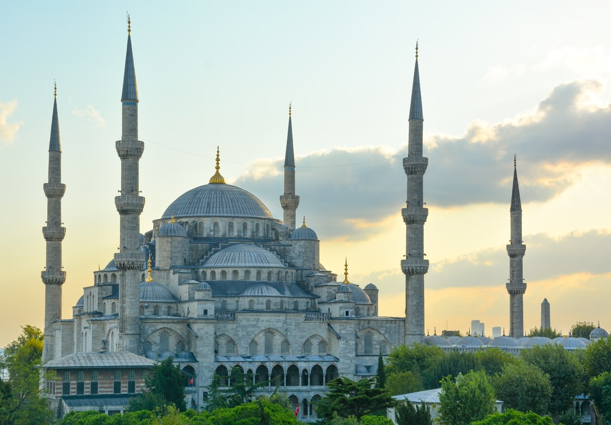
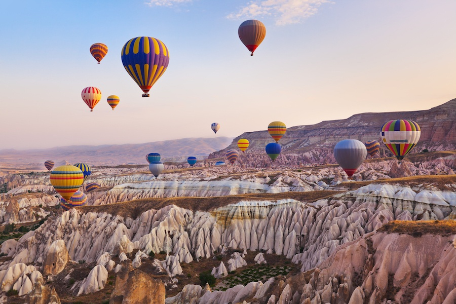
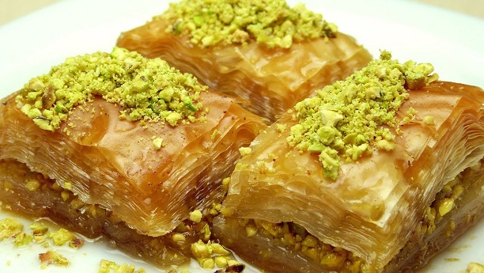
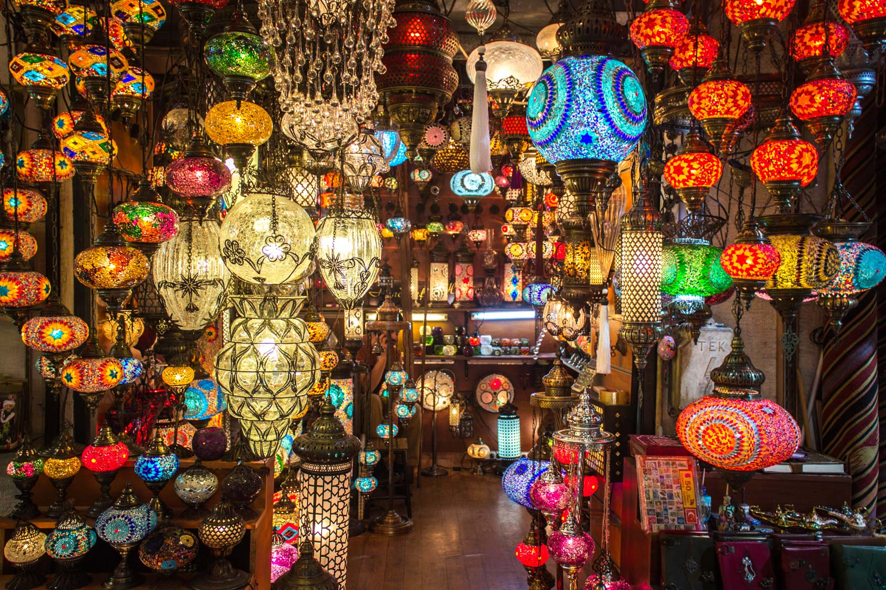

I've always wanted to travel the world. Visiting places I've never been to and of course I really want to see historical places in every corner of the world. This time, I will discuss Turkey. So, here's 5 things I will do in Turkey!
1. Hagia Sophia

Hagia Sophia is one of the world's great monuments and Turkey's popular tourist attraction, a structure of surpassing beauty with a deep overlay of the histories of East and West, Christianity and Islam. It was built as a christian church then in subsequent centuries it became a mosque, a museum, and a mosque again.
2. Blue Mosque

The Sultan Ahmed Mosque which is better known as The Blue Mosque because its appearance is dominated by blue is the most magnificent building in Istanbul, Turkey. This mosque is a mosque that is visited by many visitors but still functions as a mosque. Visitors don't need to pay an entrance ticket to enter the Blue Mosque. But it is highly recommended to wear modest clothes. Men should wear long trousers, but can wear short-sleeved shirts. Women should cover their hair and arms, as well as their legs from the knees up.
3. Cappadocia

My main goal to Cappadocia is to fly in a hot air balloon. Because Cappadocia is one of the most popular destinations in the world for hot air balloon rides. However, Cappadocia is also something that has a lot of history. Cappadocia is an amazing and spectacular landscape that has been sculpted by erosion over thousands of years. Today what is left are these amazing troglodyte villages, underground cities that once contained human habitat and beautiful valleys that go for as far as the eye can see.
4. Turkish Baklava

I want to try Turkish baklava in its mother country. Baklava is a sweet dessert pastry made of layers and filled with chopped nuts and sweetened and held together with syrup or honey. Baklava is also the world's favorite Turkish dessert.
5. Grand Bazaar

In Turkey, I also wanted to shop at the Grand Bazaar which is one of the city's main attraction. The Grand Bazaar's numerous kiosks sell everything from kilim rugs, Turkish teas, Turkish delights and spices, to colorful crafts in all shapes and sizes.